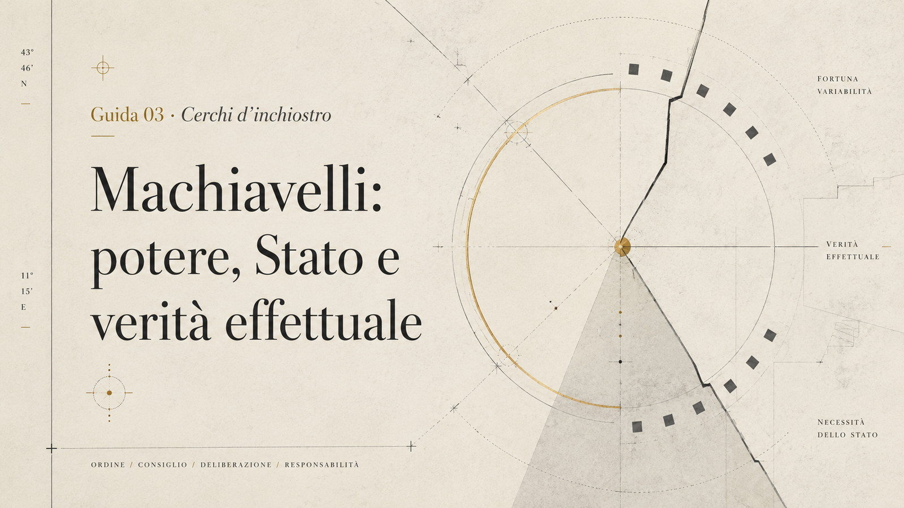

Indice
Guida sistemica · Cerchi d'inchiostro
Machiavelli: potere, Stato e verità effettuale
Machiavelli è il pensatore che riporta la politica alla verità effettuale dei conflitti e delle decisioni. Questa guida di Alessandro Gentili per Cerchi d’inchiostro legge Machiavelli attraverso vita, opere, Stato, virtù, fortuna e attualità del pensiero politico nel presente.
Il pensatore che tolse alla politica il velo delle intenzioni e la riportò alla durezza dei fatti.
Questa non è una scheda scolastica su Machiavelli. È una pagina-sistema: serve a capire Machiavelli come nodo dentro una rete di potere, Stato, conflitto, decisione, fortuna, necessità, crisi repubblicana e verità effettuale.
Machiavelli non è il maestro del cinismo. È qualcosa di più scomodo: è il pensatore che costringe a guardare il potere non come vorremmo che fosse, ma come funziona quando una comunità deve conservarsi, decidere e sopravvivere.

Machiavelli in 5 minuti
Niccolò Machiavelli nasce a Firenze nel 1469 e muore nel 1527. Vive in uno dei momenti più instabili della storia italiana: la fine dell’equilibrio quattrocentesco, le guerre d’Italia, la crisi delle città-Stato, il ritorno dei Medici, l’intervento delle grandi monarchie europee nella penisola.
Non è un filosofo chiuso in una stanza. È un uomo di cancelleria, un funzionario politico, un osservatore professionale della forza. Lavora per la Repubblica fiorentina, compie missioni diplomatiche, vede da vicino corti, eserciti, papi, re, ambasciatori, capitani di ventura e governanti in lotta per sopravvivere.
Nel 1512, con il ritorno dei Medici a Firenze, viene escluso dagli incarichi pubblici. Nel 1513 viene coinvolto nei sospetti legati a una congiura antimedicea, imprigionato e torturato. Dopo la liberazione si ritira nella sua casa di campagna presso Sant’Andrea in Percussina. Lì, lontano dal potere reale, scrive una delle opere più disturbanti della modernità politica: Il Principe.
Il punto centrale non è “insegnare a essere cattivi”. Il punto è più radicale: capire che la politica non coincide con la morale proclamata. La politica è il luogo in cui intenzioni, valori, forza, paura, leggi, armi, consenso, inganno, necessità e sopravvivenza entrano in collisione.
Per Machiavelli bisogna guardare la verità effettuale: non l’immagine ideale delle cose, ma il loro funzionamento reale. Da qui nascono i suoi concetti più noti: virtù, fortuna, necessità, Stato, conflitto, armi proprie, decisione, fondazione, conservazione.
Machiavelli serve ancora oggi perché le società contemporanee parlano molto di valori, ma spesso non sanno più nominare il potere. E quando il potere non viene nominato, non scompare: diventa opaco, tecnico, amministrativo, mediatico, algoritmico, informale. Diventa ancora più difficile da vedere.
Perché Machiavelli è importante
Machiavelli è importante perché porta la politica sulla terra.
Prima di lui esistevano grandi riflessioni sulla città, sulla giustizia, sul buon governo, sulle virtù del principe, sulla legge divina, sulla tradizione classica, sulla prudenza e sulla morale cristiana. Machiavelli non cancella tutto questo. Lo attraversa e lo costringe a rispondere a una domanda brutale: che cosa succede quando il mondo non obbedisce all’ordine morale che dichiariamo?
La sua importanza si può riassumere in cinque movimenti.
1. Separa la politica dall’autoinganno morale
Machiavelli non dice che la morale non conta. Dice che la politica non può essere capita se la si osserva solo attraverso il linguaggio della morale dichiarata. Gli uomini dicono una cosa, ne desiderano un’altra, ne temono una terza e spesso agiscono per una quarta. La politica nasce dentro questa frattura.
2. Fonda una nuova attenzione per l’effettività
Il cuore del suo metodo è guardare ciò che accade davvero. Non le repubbliche immaginarie. Non i principi ideali. Non le comunità perfette. Non gli uomini come dovrebbero essere. Gli uomini come sono quando desiderano, temono, obbediscono, tradiscono, combattono, ricordano, dimenticano.
3. Pensa lo Stato come costruzione fragile
Lo Stato non è un dato naturale. È una forma da fondare, conservare, difendere e riformare. Può decadere. Può essere conquistato. Può perdere energia. Può essere corrotto. Può crollare per debolezza militare, per conflitti interni, per cattiva leadership, per dipendenza da forze esterne.
4. Legge il conflitto come materia politica
Il conflitto non è solo una malattia della città. Può essere anche energia, dinamica, tensione produttiva. Nei Discorsi, Machiavelli guarda a Roma e vede nella lotta tra plebe e nobiltà non soltanto disordine, ma una delle condizioni della libertà repubblicana. La politica non è armonia ornamentale: è forma data al conflitto.
5. Costringe a pensare responsabilità e decisione
La decisione politica non avviene in condizioni pure. Avviene nel tempo breve, dentro pressioni, minacce, opportunità, informazioni incomplete e conseguenze irreversibili. Machiavelli non assolve tutto. Ma obbliga a chiedersi che cosa significhi agire quando non agire è già una decisione.
Il problema umano che incarna
Machiavelli incarna il problema dell’uomo che vede il potere da dentro, poi ne viene espulso, e proprio da quella esclusione capisce qualcosa che i potenti spesso non capiscono più.
È il problema della lucidità dopo la caduta.
Finché Machiavelli lavora nella cancelleria fiorentina, la politica è esperienza quotidiana: lettere, missioni, ambascerie, rapporti militari, decisioni, negoziati. Quando viene escluso, quella vita si interrompe. Rimane una ferita: l’uomo che sapeva servire lo Stato non ha più accesso allo Stato.
Da questa ferita nasce una domanda più grande: che cos’è il potere quando lo si guarda senza decorazioni?
Machiavelli non scrive come un moralista offeso. Non scrive solo come un tecnico. Scrive come qualcuno che ha visto quanto fragili siano le istituzioni, quanto instabili siano le alleanze, quanto poco basti per perdere una repubblica, quanto facilmente le parole pubbliche mascherino il movimento reale della forza.
Il suo problema umano è dunque questo: come conservare lucidità senza diventare cinici? Come guardare la durezza del potere senza trasformarsi in apologeti della brutalità? Come distinguere il realismo dalla resa morale?
Qui Machiavelli è ancora pericoloso. Non perché insegni a manipolare. Ma perché toglie al lettore la scusa dell’innocenza.
Vita essenziale
1469 — Nascita a Firenze
Niccolò Machiavelli nasce a Firenze il 3 maggio 1469, in una famiglia di antica origine ma non particolarmente ricca. Riceve una formazione umanistica, nutrita dal latino, dalla storia romana, dalla cultura politica della città.
1498 — Ingresso nella vita pubblica
Dopo la crisi del potere di Savonarola, Machiavelli entra nella macchina politica della Repubblica fiorentina come segretario della seconda cancelleria. La seconda cancelleria aveva competenze legate soprattutto alla corrispondenza politica, all’amministrazione e a questioni interne e militari: non era il vertice del potere, ma un osservatorio privilegiato sul funzionamento concreto dello Stato.
1498–1512 — Missioni diplomatiche e osservazione del potere
In questi anni svolge missioni presso corti e poteri italiani ed europei. Osserva la monarchia francese, l’Impero, il papato, e incontra da vicino figure come Cesare Borgia durante le missioni in Romagna. Impara che senza armi proprie e senza decisione politica una città resta esposta alla fortuna degli altri.
1512 — Caduta della Repubblica fiorentina
I Medici tornano a Firenze. La Repubblica cade. Machiavelli perde l’incarico. La sua vita politica pubblica viene interrotta.
1513 — Prigione, tortura, esclusione, scrittura
Coinvolto nei sospetti successivi a una congiura, viene imprigionato e torturato. Poi viene liberato. Si ritira in campagna. Nel tempo della sconfitta scrive Il Principe, probabilmente l’opera in cui la sua esperienza politica si comprime nella forma più tagliente.
1513–1519 circa — I Discorsi
Negli stessi anni, o comunque in una fase vicina, lavora ai Discorsi sopra la prima Deca di Tito Livio, opera più ampia e repubblicana, dove la riflessione su Roma consente di pensare istituzioni, conflitto, libertà, corruzione e durata degli ordini politici.
Anni successivi — Teatro, storia, ritorni parziali
Machiavelli scrive anche opere teatrali, storiche e militari: La Mandragola, Dell’arte della guerra, Istorie fiorentine, Vita di Castruccio Castracani. Ottiene alcuni incarichi, ma non torna mai davvero al centro della vita politica come prima del 1512.
1527 — Morte
Muore il 21 giugno 1527, nello stesso anno del sacco di Roma e di nuove turbolenze politiche italiane. La sua morte cade dentro il mondo che aveva osservato per tutta la vita: un’Italia instabile, contesa, attraversata da forze più grandi delle sue città.
La vita che illumina l’opera
Lo snodo decisivo non è semplicemente la nascita a Firenze, né il suo ruolo di segretario, né il fatto che abbia scritto Il Principe. Lo snodo decisivo è la caduta.
Machiavelli capisce il potere da funzionario, ma lo pensa fino in fondo da escluso.
Questa è la chiave.
Quando lavora per la Repubblica, vede la politica come pratica: ambascerie, eserciti, diplomazia, alleanze, inganni, attese, decisioni rinviate, occasioni perdute. Quando viene allontanato, quella pratica diventa memoria, ferita e forma teorica.
Il ritiro a Sant’Andrea in Percussina non è una semplice parentesi biografica. È il laboratorio della sua trasformazione. Lì Machiavelli non smette di essere politico: smette di avere un ufficio. E quando la politica non può più essere esercitata, viene pensata con una precisione quasi feroce.
In questo senso Il Principe è un testo nato da una doppia condizione:
- l’esperienza diretta delle cose pubbliche;
- l’esclusione personale dalla loro gestione.
La sua lucidità nasce proprio dal fatto che Machiavelli non può più permettersi le illusioni del ruolo. Vede il potere senza esserne protetto. Vede la fragilità dello Stato perché ha visto crollare la Repubblica. Vede la necessità delle armi proprie perché ha visto Firenze dipendere da forze esterne. Vede il peso della fortuna perché ha sperimentato quanto rapidamente una vita possa essere rovesciata.
Questo non lo rende neutrale. Machiavelli non è un osservatore disincarnato. È un uomo ferito dalla politica che continua a pensare politicamente. Da qui deriva la sua forza: non scrive per decorare la morale, ma per impedire alla politica di diventare favola.
Contesto storico e culturale
Machiavelli vive nel Rinascimento, ma non nel Rinascimento da cartolina: non quello ridotto a bellezza, prospettiva, mecenatismo e armonia. Vive nel Rinascimento come epoca di splendore e frattura, di cultura altissima e violenza politica, di città raffinate e Stati fragili.
Firenze
Firenze è una città ricchissima di cultura, denaro, conflitti interni e ambizioni politiche. È anche una città vulnerabile. Ha istituzioni repubblicane, ma deve confrontarsi con famiglie potenti, fazioni, pressioni esterne, eserciti stranieri, papi e monarchie.
L’Italia delle guerre
Dal 1494 l’Italia diventa teatro delle guerre tra grandi potenze europee. Francia, Spagna, Impero e papato si muovono su una penisola politicamente frammentata. Le città italiane, pur culturalmente splendide, mostrano una debolezza strutturale: non riescono a diventare potenze statuali paragonabili alle monarchie emergenti.
La crisi della politica comunale
Il mondo comunale e signorile italiano non basta più. Le libertà cittadine sono preziose, ma fragili. Le istituzioni possono essere brillanti, ma prive di forza. Le élite possono essere colte, ma incapaci di decisione. La cultura umanistica convive con la dipendenza militare.
Umanesimo e antichità
Machiavelli eredita la cultura umanistica e guarda a Roma come a un laboratorio politico. Ma non usa gli antichi come ornamento. Li usa come strumenti per capire fondazione, durata, corruzione, conflitto, virtù civile.
Religione e politica
La religione è ancora una forza decisiva. Savonarola, il papato, la morale cristiana, l’uso politico del sacro, la fragilità dei principati ecclesiastici e il ruolo temporale della Chiesa formano il paesaggio nel quale Machiavelli pensa. Non siamo ancora in una politica “laica” nel senso moderno; siamo in un mondo in cui il sacro è anche autorità, disciplina, promessa, paura, legittimazione, istituzione.
La rottura di Machiavelli non consiste nel liquidare la religione come superstizione. È più sottile: egli guarda la religione anche per i suoi effetti civili. Le credenze possono fondare obbedienza, coraggio, memoria comune, disciplina pubblica; ma possono anche diventare profezia disarmata, ipocrisia, copertura dell’impotenza o strumento di dominio.
Per questo il nodo cristianesimo-politica va trattato con cautela. Machiavelli non è semplicemente “contro” la religione. È contro una politica che si rifugia nella morale proclamata mentre perde forza, ordini e capacità di difesa. Il punto non è sostituire Dio con il cinismo, ma osservare che uno Stato non vive di intenzioni pie se non possiede istituzioni, armi, decisione e virtù civile.
Nascita della modernità politica
Machiavelli si colloca nel passaggio verso la modernità: la politica inizia a essere pensata non soltanto come applicazione di una morale superiore, ma come campo autonomo di forze, decisioni e istituzioni. Qui sta la sua rottura.
Cerchi disciplinari
Filosofia politica e Stato
È il cerchio principale. Machiavelli pensa potere, principato, repubblica, legge, conflitto, armi, istituzioni, fondazione e conservazione dello Stato.
Letteratura e forme narrative
Machiavelli è anche scrittore: la sua prosa è rapida, concreta, tagliente. Scrive trattati, lettere, teatro, storia. La forma non è accessoria: il suo stile è parte del pensiero.
Storia e metodo
La storia, soprattutto Roma, non è archivio morto. È laboratorio di comparazione politica. Il passato serve a capire ricorrenze, possibilità, errori, forme della corruzione e della grandezza.
Sociologia, antropologia e psicologia politica
Machiavelli osserva desideri, paure, ambizione, gratitudine, memoria, odio, apparenza, reputazione. Non costruisce una psicologia sistematica, ma mostra una formidabile intelligenza del comportamento politico.
Media, linguaggio e propaganda
Nel suo pensiero conta il rapporto tra essere e apparire. Il principe deve saper gestire reputazione, percezione, promesse, immagini pubbliche. Qui Machiavelli parla anche al nostro mondo mediatico.
Religione e secolarizzazione
Machiavelli non elimina la religione dal campo politico: ne studia la funzione pubblica. In lui la religione non è solo dottrina interiore, ma anche forza capace di ordinare i costumi, fondare obbedienza, sostenere la virtù civile o, al contrario, indebolire l’energia politica quando diventa pura apparenza morale. Per questo è uno snodo decisivo nel passaggio da una politica legittimata teologicamente a una politica pensata nella sua effettività storica.
Tecnica, piattaforme e potere opaco
Machiavelli aiuta a leggere un problema contemporaneo senza trasformarlo in un profeta del digitale: quando il potere non appare più come comando personale, ma come sistema, procedura, piattaforma, algoritmo o amministrazione, chi decide davvero? La domanda machiavelliana non sparisce. Cambia maschera.
Opere principali
Il Principe
È l’opera più celebre. Scritta nel 1513 circa e pubblicata postuma nel 1532 a Roma dall’editore Antonio Blado, analizza i principati, i modi in cui si acquistano e si conservano, le armi, le qualità del principe, il rapporto tra virtù, fortuna e necessità. È un testo breve, compatto, micidiale. Ma va letto con attenzione: non è un semplice manuale per tiranni.
La versione tramandata è dedicata a Lorenzo de’ Medici il Giovane, duca di Urbino; con ogni probabilità una prima destinazione era rivolta a Giuliano de’ Medici, morto nel 1516. Anche questa dedica appartiene alla ferita biografica di Machiavelli: l’uomo escluso dal potere cerca ancora un varco per rientrare nella vita dello Stato.
Discorsi sopra la prima Deca di Tito Livio
Sono l’opera più ampia e decisiva per capire il Machiavelli repubblicano. Partendo dalla storia romana di Tito Livio, Machiavelli riflette su leggi, ordini, conflitti sociali, libertà repubblicana, corruzione, religione civile, milizia e durata degli Stati.
Dell’arte della guerra
Opera dedicata al problema militare. Per Machiavelli le armi non sono un dettaglio tecnico, ma un problema politico fondamentale. Uno Stato che dipende dalle armi altrui dipende anche dalla volontà altrui.
Istorie fiorentine
Opera storica su Firenze. Permette di vedere Machiavelli al lavoro sulla memoria politica della città, sui conflitti interni, sulle trasformazioni degli ordini e sulle dinamiche del potere locale.
La Mandragola
Commedia tra le più importanti del teatro rinascimentale italiano. Mostra un altro Machiavelli: ironico, disincantato, attentissimo all’inganno, al desiderio, all’ipocrisia sociale e alla distanza tra morale pubblica e comportamenti reali.
Il congegno della commedia — Callimaco, Ligurio, Nicia, la costruzione dell’inganno, l’uso interessato delle parole e della credulità — rende teatrale un problema politico più generale: spesso gli uomini agiscono dietro maschere morali, mentre desiderio, utilità, paura e reputazione muovono davvero la scena.
Vita di Castruccio Castracani
Testo storico-letterario dedicato al condottiero lucchese. Mescola biografia, modello politico e riflessione sulla virtù del capo. Va letto con cautela: non è una biografia moderna, ma una costruzione esemplare.
Lettere
Le lettere, in particolare quella a Francesco Vettori del 10 dicembre 1513, sono fondamentali per capire il Machiavelli umano: l’uomo caduto, ironico, amareggiato, ancora affamato di politica, capace di trasformare la sua giornata ordinaria in una scena quasi teatrale tra miseria quotidiana e colloquio serale con gli antichi.
Il Principe e i Discorsi: comando e repubblica
La tensione tra Il Principe e i Discorsi è il punto in cui Machiavelli diventa davvero interessante. Letti male, sembrano due Machiavelli diversi: da una parte il consigliere del principe, dall’altra il pensatore repubblicano. Letti meglio, mostrano due ingressi nello stesso problema: come nasce, si conserva e si rinnova un ordine politico quando la storia è instabile.
Il Principe guarda la politica nel momento della fondazione, della crisi e della concentrazione della decisione. È il libro del tempo stretto: quando lo Stato è nuovo, minacciato, fragile, esposto alla fortuna, e qualcuno deve decidere prima che gli eventi decidano al suo posto. Qui il principe non è solo un individuo: è la figura della decisione politica quando gli ordini non bastano ancora o non reggono più.
I Discorsi guardano invece la durata. Non chiedono soltanto come un potere si conquista o si conserva, ma come una comunità può ordinarsi nel tempo, contenere la corruzione, dare forma al conflitto, trasformare gli urti sociali in leggi e libertà. Sono il libro della repubblica come architettura della durata.
Il nodo memorabile è questo: Il Principe pensa l’energia della fondazione; i Discorsi pensano l’ordine della durata. Senza fondazione, la repubblica resta desiderio fragile. Senza ordini, il comando diventa episodio, violenza, avventura personale. Machiavelli sta nella tensione tra queste due esigenze.
Per questo non va ridotto né al manuale del tiranno né al repubblicano addomesticato. Il suo problema è più profondo: ogni ordine politico ha bisogno di decisione, ma ogni decisione che non diventa istituzione si consuma. Ogni repubblica ha bisogno di leggi, ma ogni legalità senza virtù e forza perde presa sulla realtà.
In questa tensione si trova la grandezza di Machiavelli: egli capisce che la politica non vive solo di comando e non vive solo di procedura. Vive del rapporto difficile tra energia e forma, eccezione e istituzione, fondazione e durata.
Machiavelli e la lingua/stile
Machiavelli non è soltanto importante per ciò che dice. È importante per come lo dice.
La sua prosa è asciutta, rapida, concreta, nervosa. Non procede come una costruzione accademica. Procede per osservazioni, esempi, casi, urti, improvvise formule memorabili. È una lingua che sembra voler togliere aria alla retorica. Non consola il lettore, non lo accompagna con eleganza ornamentale: lo mette davanti a un fatto.
Questa forma è parte del pensiero. La scrittura machiavelliana non descrive semplicemente la verità effettuale: prova a farla sentire. Taglia, comprime, accelera, oppone apparenza e risultato, intenzione e conseguenza, desiderio e necessità.
Anche nelle lettere e nella Mandragola si vede la stessa intelligenza della scena: Machiavelli sa che gli uomini non vivono solo di principi astratti, ma di parole dette a qualcuno, di maschere, interessi, paure, desideri, piccoli inganni, reputazioni. La sua lingua è politica perché vede sempre il rapporto tra discorso e situazione.
Per una guida sistemica questo punto è decisivo: Machiavelli non fonda solo una nuova attenzione al potere. Fonda anche uno stile della lucidità. Una lingua capace di strappare la politica al latino dell’ideale e di portarla nella materia viva dei fatti.
Idee chiave
Questa sezione offre il senso generale del pensiero di Machiavelli. La sezione successiva, “Concetti chiave”, funziona invece come mappa operativa per orientarsi nei testi.
La politica va capita nella sua realtà, non nella sua immagine
La politica non coincide con ciò che dice di essere. Le istituzioni parlano di giustizia, i governanti di bene comune, le fazioni di libertà, gli Stati di ordine. Ma dietro queste parole agiscono forza, interessi, paura, ambizione, necessità, reputazione, fortuna.
Lo Stato è fragile
Uno Stato può crollare. Non basta avere buone intenzioni, cultura raffinata o memoria gloriosa. Servono istituzioni, armi, decisione, coesione, capacità di adattamento.
La virtù non è bontà morale
La virtù machiavelliana è capacità di forma: energia, decisione, intelligenza della situazione, prontezza, audacia, misura, capacità di agire dentro il disordine.
La fortuna non è puro caso
La fortuna è l’insieme delle circostanze non controllabili. Ma non tutto è fortuna. La virtù consiste anche nel prepararsi, cogliere l’occasione, costruire argini prima della piena.
Il conflitto può produrre libertà
Nei Discorsi, Machiavelli mostra che il conflitto tra ordini sociali non è solo pericolo. Se istituzionalizzato, può produrre leggi migliori e difendere la libertà.
Le armi proprie sono decisive
Dipendere militarmente da altri significa dipendere politicamente da altri. In forma moderna: una comunità che non controlla le proprie infrastrutture decisive non è pienamente sovrana.
La morale proclamata può diventare maschera
Il problema non è che i valori siano inutili. Il problema è quando i valori servono a nascondere rapporti di forza, impotenza decisionale o interessi non dichiarati.
Concetti chiave
Verità effettuale
È il cuore del metodo machiavelliano: guardare la realtà delle cose, non la loro immagine ideale.
Virtù
Capacità politica di agire, decidere, fondare, conservare, adattarsi, resistere alla fortuna e imprimere forma agli eventi.
Fortuna
Il campo dell’imprevedibile: circostanze, caso, occasione, rovesciamento, eventi esterni, instabilità del tempo.
Occasione
Il momento propizio all’azione: il punto in cui virtù e circostanze possono incontrarsi. Non coincide con la fortuna. La fortuna è l’insieme instabile delle condizioni; l’occasione è la sua apertura concreta.
Necessità
La pressione delle condizioni concrete. Non tutto ciò che è necessario è moralmente desiderabile; ma ignorare la necessità può distruggere la comunità che si voleva proteggere.
Stato
Forma politica da fondare e conservare. Non entità astratta, ma costruzione storica fatta di istituzioni, forza, leggi, armi, consenso, timore, memoria.
Principe
Figura del comando politico nei principati. Non va letta solo come persona: rappresenta il problema della decisione, della fondazione e della conservazione del potere.
Repubblica
Forma politica in cui il conflitto può essere incanalato dentro ordini e leggi. Nei Discorsi è il grande laboratorio della libertà politica.
Corruzione
Perdita di energia civile, deformazione degli ordini, prevalenza degli interessi privati sul bene pubblico, incapacità di mantenere la forma politica.
Armi proprie
Capacità di difesa autonoma. Per Machiavelli sono condizione della libertà politica.
Apparenza
Dimensione pubblica della reputazione e del consenso. Il potere non vive solo di forza: vive anche di percezione.
Verità effettuale
La formula più importante di Machiavelli è anche una delle più fraintese: verità effettuale.
Non significa semplicemente “realismo” nel senso banale del termine. Non significa: “siccome il mondo è cattivo, allora bisogna essere cattivi”. Questo è Machiavelli ridotto a poster da manager aggressivo: comodo, vendibile, falso.
La verità effettuale è un metodo dello sguardo.
Vuol dire: non cominciare dalla politica come dovrebbe apparire, ma dalla politica come funziona. Non cominciare dall’uomo ideale, ma dall’uomo concreto. Non cominciare dalla città perfetta, ma dalla città attraversata da desideri, paure, fazioni, memorie, interessi e minacce.
Machiavelli vede che molta teoria politica costruisce immagini ordinate del potere: principi buoni, città giuste, governanti virtuosi, popoli riconoscenti, alleanze stabili, parole affidabili. Ma l’esperienza gli ha mostrato altro: i popoli cambiano umore, gli alleati tradiscono, i mercenari combattono male o per sé, i potenti promettono ciò che conviene promettere, la fortuna rovescia rapidamente le posizioni.
La verità effettuale è allora il contrario dell’ingenuità politica.
Box di lettura — Machiavelli non dice: “fai il male”.
Dice qualcosa di più difficile: guarda le condizioni dell’azione. Chiediti quali forze sono in campo, quali conseguenze produrrà la tua scelta, quale ordine vuoi salvare, quale prezzo stai pagando e quale ipocrisia stai usando per non vedere quel prezzo.
Non è rifiuto dei valori. È rifiuto dell’autoinganno.
Una società che non guarda la verità effettuale rischia tre cose:
- Moralismo impotente: parla bene, ma non sa agire.
- Ipocrisia istituzionale: dichiara principi, ma lascia il potere reale altrove.
- Dipendenza: crede di essere libera, ma delega ad altri forza, infrastrutture, difesa, decisione.
Per questo Machiavelli resta scomodo. Non perché dica cose “cattive”, ma perché impedisce alla politica di rifugiarsi nella buona coscienza.
La verità effettuale obbliga a una domanda adulta: che cosa sta davvero accadendo sotto le parole che usiamo per descriverlo?
Virtù e fortuna
Se la verità effettuale è il metodo dello sguardo, virtù e fortuna sono il cuore dinamico del pensiero machiavelliano.
Fortuna
La fortuna è tutto ciò che non dipende pienamente da noi: eventi esterni, casi, crisi, occasioni, guerre, mutamenti di alleanze, rovesciamenti improvvisi, debolezze degli altri, errori non prevedibili.
Ma Machiavelli non è fatalista. Non dice: tutto è fortuna, dunque nulla conta. Dice piuttosto: la fortuna esiste, ma non colpisce tutti nello stesso modo. Colpisce più duramente chi non ha costruito argini, chi non ha ordinato le proprie forze, chi non ha preparato istituzioni capaci di resistere.
La fortuna premia spesso chi è pronto. O almeno danneggia meno chi si è preparato.
Virtù
La virtù non coincide con la bontà morale. È una qualità politica: energia, coraggio, intelligenza della situazione, capacità di mutare condotta, decisione, prontezza, dominio di sé, capacità di fondare ordini e resistere all’instabilità.
Il virtuoso, in senso machiavelliano, non è semplicemente il buono. È chi sa leggere il tempo e agire nel punto giusto.
Qui nasce una delle intuizioni più moderne di Machiavelli: non esiste una formula valida sempre. Una condotta può funzionare in un tempo e fallire in un altro. La difficoltà politica sta nel mutare con i tempi senza perdere forma.
Il rapporto tra virtù e fortuna
La politica nasce nello spazio tra ciò che dipende da noi e ciò che ci supera.
Se tutto dipendesse dalla virtù, basterebbe essere capaci. Se tutto dipendesse dalla fortuna, non avrebbe senso agire. Machiavelli invece pensa il loro urto: l’uomo politico agisce dentro un mondo che non controlla totalmente, ma che può parzialmente orientare.
Questa tensione è ancora attualissima. Anche oggi individui, imprese, Stati e comunità vivono tra progettazione e shock esterni: crisi finanziarie, guerre, pandemie, tecnologia, instabilità climatica, trasformazioni sociali. La domanda machiavelliana resta intatta: abbiamo virtù sufficiente per affrontare la fortuna?
La Costellazione
Prima di Machiavelli
Platone
Platone pensa il rapporto tra verità e città. La domanda platonica è: chi deve governare, se la città deve orientarsi al vero e al bene? Machiavelli sposta la questione: che cosa accade quando la città non è governata dal vero, ma da forza, paura, desiderio, occasione, conflitto?
Platone chiede chi possa conoscere il bene. Machiavelli chiede chi possa mantenere lo Stato quando il bene dichiarato non basta.
Aristotele
Aristotele pensa la politica come dimensione naturale della vita umana e riflette sulle costituzioni, sulla virtù, sulla vita buona. Machiavelli eredita il problema delle forme politiche, ma lo porta dentro una storia più instabile, segnata da armi, fortuna e crisi degli ordini.
Polibio
Polibio è importante per la riflessione sulle costituzioni miste e sulla storia romana. Machiavelli guarda a Roma anche attraverso questo orizzonte: la durata di uno Stato dipende dagli ordini, dall’equilibrio dei conflitti, dalla capacità di evitare la corruzione.
Tito Livio
Livio è decisivo per i Discorsi. Machiavelli non lo legge come antiquario, ma come interlocutore politico. Roma diventa laboratorio di libertà, conflitto, religione civile, milizia, fondazione, espansione e decadenza.
Cristianesimo politico medievale
Prima di Machiavelli, larga parte del pensiero politico europeo è legata al rapporto tra ordine terreno e ordine divino. Machiavelli rompe questa cornice senza semplicemente negare la religione: sposta l’attenzione dalla legittimazione trascendente al funzionamento storico della forza e delle istituzioni.
Umanesimo civile
Firenze aveva già sviluppato una forte tradizione di umanesimo civile, attenzione alla repubblica, alla libertà, alla vita attiva. Machiavelli ne eredita energia e linguaggio, ma li rende più duri: senza armi, istituzioni e decisione, l’amore per la libertà resta fragile.
Contemporanei / interlocutori / avversari
Savonarola
Savonarola è una figura decisiva per capire l’ambiente politico fiorentino. Machiavelli osserva la forza politica della profezia, ma anche il limite di un potere disarmato. Il profeta senza armi diventa per lui un caso politico, non solo religioso.
Cesare Borgia
Cesare Borgia rappresenta per Machiavelli un esempio potente di virtù politica, audacia e costruzione del potere. Non è un santo, né un modello morale. È un caso di energia politica dentro un mondo instabile.
Piero Soderini
Il gonfaloniere della Repubblica fiorentina rappresenta un altro polo: prudenza, legalità, moderazione, ma anche difficoltà di decisione in tempi eccezionali. Machiavelli vede nella debolezza decisionale una delle cause della fragilità politica.
I Medici
Il ritorno dei Medici cambia la vita di Machiavelli. Sono al tempo stesso avversari politici, potenziali destinatari di un rientro in servizio e simbolo della trasformazione di Firenze. Il rapporto con loro è ambiguo, pratico, doloroso.
Francesco Vettori
Amico e corrispondente. Attraverso le lettere a Vettori emerge il Machiavelli più umano: ironico, ferito, escluso, ma intellettualmente vivo. La politica non è più ufficio, ma ancora desiderio e pensiero.
Guicciardini
Francesco Guicciardini è interlocutore fondamentale. Più aristocratico, più prudente, più scettico verso i modelli generali. Il confronto tra Machiavelli e Guicciardini è uno dei grandi nodi della cultura politica italiana: regola e particulare, energia fondativa e prudenza, repubblica e realismo storico.
Dopo Machiavelli
Machiavellismo e antimachiavellismo
Dopo Machiavelli nasce il “machiavellismo”: spesso più una caricatura che una comprensione. Il suo nome diventa sinonimo di doppiezza, inganno, immoralità politica. Ma questa ricezione dice anche quanto Machiavelli abbia toccato un nervo scoperto: il rapporto tra potere e morale pubblica.
Nel 1559 le opere di Machiavelli vengono inserite nell’Indice dei libri proibiti. È uno snodo decisivo della ricezione: Machiavelli diventa non solo autore discusso, ma figura sospetta per l’ordine religioso e politico europeo.
Ragion di Stato
La riflessione successiva sulla ragion di Stato riprende, trasforma e spesso normalizza alcuni problemi machiavelliani: conservazione dello Stato, necessità, sicurezza, eccezione, prudenza governativa. Machiavelli però resta più originario e più inquieto: non costruisce solo una dottrina, apre una ferita.
Hobbes
Hobbes penserà lo Stato a partire dalla paura, dalla sicurezza e dal patto. Machiavelli non costruisce un sistema contrattualista, ma prepara il terreno della modernità politica: la politica come ordine artificiale contro instabilità, violenza e dissoluzione.
Rousseau
Rousseau leggerà Machiavelli in chiave repubblicana, vedendo nel Principe non solo un manuale per i governanti, ma anche una rivelazione dei meccanismi del potere. Qui emerge un Machiavelli utile ai popoli: conoscere il potere significa non esserne ingenuamente dominati.
Hegel
Hegel vede in Machiavelli un pensatore della necessità politica in un’Italia divisa. Il problema non è solo morale individuale, ma costruzione dello Stato in un contesto di frammentazione storica.
Gramsci
Gramsci riprende Machiavelli attraverso l’idea del moderno Principe: non più il singolo governante, ma il soggetto politico collettivo capace di organizzare volontà, egemonia, direzione. Machiavelli entra così nella riflessione moderna su partito, popolo, cultura e potere.
Realismo politico contemporaneo
Machiavelli resta un padre del realismo politico. Ma va usato con cautela: il realismo non è culto della forza. È disciplina dello sguardo, capacità di non confondere dichiarazioni e rapporti reali.
Fenomeni contemporanei che Machiavelli aiuta a leggere
Politica come comunicazione permanente
Viviamo in un tempo in cui molta politica appare come narrazione, branding, postura morale, gestione dell’immagine. Machiavelli aiuta a chiedere: quale rapporto c’è tra ciò che viene detto e ciò che viene deciso?
Debolezza degli Stati
Globalizzazione, mercati, tecnocrazie, piattaforme, vincoli sovranazionali e dipendenze infrastrutturali rendono gli Stati spesso meno sovrani di quanto dichiarino. Machiavelli chiederebbe: dove sono le armi proprie oggi? Dove sono le capacità autonome?
Moralismo pubblico e impotenza decisionale
Le società contemporanee parlano molto di valori. Ma spesso faticano a trasformarli in istituzioni, scelte, priorità, difesa del bene comune. Qui Machiavelli è chirurgico: il valore che non diventa forma politica resta retorica.
Tecnica, piattaforme e potere invisibile
Una parte crescente delle decisioni passa attraverso sistemi tecnici: piattaforme, ranking, dati, procedure automatizzate. Il potere non scompare: si sposta. Machiavelli aiuta a non farsi ipnotizzare dall’apparente neutralità degli strumenti.
Crisi delle élite
Machiavelli è utile per leggere élite colte ma indecise, classi dirigenti che parlano linguaggi elevati ma perdono controllo delle forze reali, istituzioni che difendono la propria immagine più della propria funzione.
Conflitto sociale rimosso
Molte democrazie tendono a presentare il conflitto come disturbo da gestire tecnicamente. Machiavelli ricorda che il conflitto può essere pericolo, ma anche segnale vitale. Il problema non è eliminarlo: è dargli forma istituzionale.
Eredità nel nostro tempo
L’eredità di Machiavelli non consiste nel ripetere che “la politica è sporca”. Questa è la frase di chi vuole sembrare adulto senza pensare davvero.
L’eredità di Machiavelli è più seria: ogni comunità deve sapere come si conserva, come decide, come si difende, come regge il conflitto, come distingue la parola pubblica dal movimento reale del potere.
In un tempo dominato da comunicazione, procedure, policy, indignazioni rapide e governance opaca, Machiavelli ci costringe a recuperare alcune domande elementari:
- Chi decide?
- Con quali strumenti?
- In nome di chi?
- Con quale forza reale?
- Con quale controllo?
- Con quali conseguenze?
- Quale distanza c’è tra ciò che viene dichiarato e ciò che viene fatto?
Queste domande valgono per gli Stati, ma anche per le imprese, le piattaforme, le università, i media, le organizzazioni internazionali, i partiti, le comunità locali.
Machiavelli è ancora vivo perché abita il punto in cui le parole finiscono e cominciano le condizioni reali dell’azione.
Non ci chiede di diventare peggiori. Ci chiede di smettere di essere ingenui.
La ferita contemporanea: Machiavelli e la rimozione ipocrita del potere
La nostra epoca non ha eliminato il potere. Lo ha reso più difficile da nominare.
Parliamo di valori, inclusione, sostenibilità, diritti, innovazione, sicurezza, comunità, partecipazione. Sono parole importanti. Ma possono diventare anche parole-schermo, se non mostrano più chi decide, chi paga, chi guadagna, chi perde, chi controlla le infrastrutture, chi stabilisce le priorità, chi dispone della forza.
La ferita contemporanea che Machiavelli riapre è questa: una società può diventare moralmente rumorosa e politicamente cieca.
Può parlare sempre di bene e non vedere più il potere.
Può moltiplicare dichiarazioni etiche e intanto lasciare le decisioni vere a strutture opache. Può indignarsi ogni giorno e non costruire alcuna capacità collettiva. Può celebrare la trasparenza mentre i meccanismi reali diventano sempre più tecnici, finanziari, algoritmici, giuridici, sovranazionali.
Machiavelli non direbbe che i valori sono falsi. Direbbe una cosa più dura: un valore che non conosce le condizioni della propria difesa è fragile. Una libertà senza istituzioni capaci di proteggerla è retorica. Una comunità senza armi proprie, oggi diremmo senza competenze, infrastrutture, autonomia strategica e capacità decisionale, dipende dalla fortuna degli altri.
La rimozione ipocrita del potere produce due mostri gemelli.
Il primo è il moralismo impotente: giudica tutto, ma non governa nulla.
Il secondo è il cinismo mascherato: usa i valori come linguaggio pubblico mentre pratica rapporti di forza non dichiarati.
Machiavelli serve perché spezza entrambi. Non accetta il moralismo che non sa decidere. Non accetta il cinismo che finge di non esserlo. Chiede una politica capace di guardare la durezza delle cose senza smettere di domandarsi che cosa una comunità voglia salvare.
In questo senso, Machiavelli è meno cinico di molti suoi lettori. Il cinico usa Machiavelli per giustificarsi. Il lettore serio usa Machiavelli per vedere meglio.
La domanda chiave resta aperta:
Che cosa accade a una società quando parla sempre di valori ma non sa più guardare il potere reale?
Accade che il potere non scompare. Si sposta dove nessuno lo chiama più per nome.
Curiosità intelligenti
Machiavelli ha davvero scritto “il fine giustifica i mezzi”?
No, non in questa forma. La frase è una sintesi posteriore e semplificata, spesso usata per ridurre Machiavelli a caricatura. Il problema machiavelliano non è autorizzare qualsiasi mezzo per qualsiasi scopo, ma capire la tensione tra necessità politica, conservazione dello Stato, reputazione, forza e condizioni reali dell’azione.
Quando fu pubblicato Il Principe?
Il Principe fu scritto probabilmente nel 1513, ma venne pubblicato postumo nel 1532 a Roma dall’editore Antonio Blado. Questo scarto tra scrittura e pubblicazione è importante: il testo nasce dalla ferita politica dell’esclusione, ma diventa pubblico solo dopo la morte di Machiavelli.
Perché Il Principe è dedicato a un Medici?
Perché Machiavelli, dopo la caduta della Repubblica, cerca anche un possibile rientro nella vita politica. La dedica tramandata è a Lorenzo de’ Medici il Giovane, duca di Urbino; probabilmente una prima destinazione era pensata per Giuliano de’ Medici, morto nel 1516. La dedica non va letta solo come servilismo: è un gesto pratico, ambiguo, doloroso, coerente con un uomo che continua a volere un ruolo nello Stato.
Machiavelli preferiva il principato o la repubblica?
La domanda è troppo semplice. Nei Discorsi emerge una forte attenzione repubblicana. Nel Principe analizza invece il problema del comando in condizioni di fondazione, crisi o instabilità. Machiavelli pensa entrambe le forme a partire dal problema concreto: come si fonda, conserva e rinnova un ordine politico?
Perché Roma è così importante per Machiavelli?
Roma offre un laboratorio storico di durata, conflitto, virtù militare, religione civile, istituzioni e grandezza politica. Machiavelli non guarda Roma con nostalgia antiquaria, ma come un archivio vivo di problemi politici.
Perché Machiavelli parla tanto di armi?
Perché per lui la politica senza forza propria è dipendenza. Le armi mercenarie o ausiliarie espongono lo Stato alla volontà altrui. In termini contemporanei, il problema può essere esteso alle infrastrutture strategiche, alla tecnologia, all’energia, ai dati, alla capacità produttiva.
Machiavelli era ateo?
La questione è complessa e non si risolve con un’etichetta. Certamente Machiavelli guarda alla religione anche nella sua funzione civile e politica. Gli interessa come le credenze producono ordine, coraggio, disciplina, coesione o debolezza pubblica.
Perché La Mandragola è importante?
Perché mostra in forma comica molti temi machiavelliani: desiderio, inganno, ipocrisia, intelligenza pratica, distanza tra morale proclamata e comportamento reale. È una commedia, ma anche una piccola anatomia sociale della verità effettuale.
Perché Machiavelli fu messo all’Indice?
Le opere di Machiavelli furono inserite nell’Indice dei libri proibiti nel 1559. La condanna nasce dal carattere disturbante della sua analisi politica: Machiavelli non subordina semplicemente la politica al linguaggio morale e religioso tradizionale, ma la osserva nella sua autonomia, nei suoi effetti e nelle sue necessità.
Che cosa rende Machiavelli moderno?
La sua modernità nasce dall’attenzione all’autonomia della politica, alla costruzione dello Stato, alla verità effettuale, alla decisione, alla forza delle istituzioni e alla distanza tra morale pubblica e funzionamento reale del potere.
Perché Machiavelli è ancora letto nelle scuole?
Perché costringe a pensare insieme letteratura, storia, politica e linguaggio. Non è solo un autore “da programma”: è uno degli snodi con cui l’Italia ha pensato la propria fragilità politica e la nascita della modernità.
Errori comuni da evitare
1. Ridurlo a “il fine giustifica i mezzi”
È l’errore più comune. Comodo, rapido, quasi sempre fuorviante. Machiavelli non è uno slogan.
2. Farne un maestro del male
Machiavelli non insegna semplicemente a essere malvagi. Analizza la politica quando la bontà dichiarata non basta a conservare lo Stato.
3. Leggere solo Il Principe
Senza i Discorsi, Machiavelli viene mutilato. Il Principe mostra il problema del comando e della fondazione; i Discorsi aprono il problema della repubblica, del conflitto e della libertà.
4. Confondere virtù con virtù cristiana
La virtù machiavelliana non è santità morale. È capacità politica di agire nel tempo instabile.
5. Pensare che fortuna significhi destino assoluto
La fortuna pesa, ma non annulla l’azione. Machiavelli pensa il rapporto tra caso e preparazione.
6. Separare troppo teoria e biografia
La caduta politica di Machiavelli illumina la sua opera. Non basta conoscere le date: bisogna capire la ferita da cui nasce la scrittura.
7. Leggere Machiavelli come se fosse contemporaneo in modo diretto
Machiavelli aiuta a leggere il presente, ma non va trasformato in opinionista di oggi. Va tradotto con intelligenza, non forzato.
8. Pensare che realismo significhi assenza di etica
Il realismo non elimina il problema etico. Lo rende più difficile, perché lo colloca dentro conseguenze reali.
Mini-glossario
Armi proprie
Forze militari controllate direttamente dallo Stato. Per Machiavelli sono condizione della sicurezza e dell’autonomia politica.
Corruzione
Decadenza degli ordini politici e della virtù civile; prevalenza di interessi privati, debolezza istituzionale, perdita di energia pubblica.
Discorsi
Opera dedicata alla riflessione su Roma repubblicana a partire da Tito Livio. Fondamentale per capire il Machiavelli repubblicano.
Fortuna
Campo dell’imprevedibile: caso, occasione, evento, crisi, rovesciamento. Non è puro destino, perché la virtù può prepararsi alla fortuna.
Occasione
Il momento propizio all’azione politica. È il punto in cui la virtù può incontrare le circostanze e trasformarle in fondazione, decisione o salvezza dello Stato.
Principato
Forma politica centrata sul comando del principe. Nel Principe è analizzata soprattutto nella sua fondazione e conservazione.
Repubblica
Forma politica in cui gli ordini e il conflitto possono contribuire alla libertà e alla durata dello Stato.
Stato
Ordine politico storico, fragile, da fondare, mantenere, difendere e riformare.
Verità effettuale
Realtà concreta delle cose politiche, distinta dall’immagine ideale o immaginaria.
Virtù
Capacità di agire politicamente dentro l’instabilità: energia, decisione, adattamento, intelligenza del tempo.
Necessità
Pressione delle circostanze che obbliga a scegliere dentro limiti reali, spesso senza soluzioni pure.
Milizie mercenarie
Forze armate al servizio di chi paga. Per Machiavelli sono instabili e pericolose perché non radicate nella comunità politica.
Apparenza
Dimensione pubblica del potere: reputazione, immagine, percezione, fiducia, timore.
Percorsi di studio e lettura
Percorso da 15 minuti
- Leggi la sezione “Machiavelli in 5 minuti”.
- Leggi “Verità effettuale”.
- Leggi “Virtù e fortuna”.
- Chiudi con “Errori comuni da evitare”.
Obiettivo: uscire dalla caricatura del cinico e capire i tre cardini minimi: realtà effettuale, virtù, fortuna.
Percorso da 1 ora
- Leggi “Vita essenziale”.
- Leggi “La vita che illumina l’opera”.
- Leggi “Opere principali”.
- Leggi “Il Principe e i Discorsi”.
- Leggi “Idee chiave” e “Concetti chiave”.
- Leggi “La ferita contemporanea”.
- Consulta le FAQ.
Obiettivo: capire il rapporto tra biografia, opere, concetti e attualità.
Percorso da 1 settimana
Giorno 1: Vita e contesto storico.
Giorno 2: Il Principe, con attenzione a principati, armi, virtù, fortuna.
Giorno 3: Discorsi, con attenzione a Roma, conflitto, repubblica e libertà.
Giorno 4: Confronto tra Principe e Discorsi.
Giorno 5: Mandragola e lettere, per vedere il Machiavelli scrittore e uomo.
Giorno 6: Costellazione: prima, contemporanei, dopo.
Giorno 7: Scrivere una sintesi personale sulla domanda: che cosa significa oggi guardare la verità effettuale del potere?
Obiettivo: non memorizzare Machiavelli, ma usarlo come strumento di lettura politica.
Domande per orientarsi
- Perché Machiavelli nasce dentro la crisi della libertà politica italiana?
- Che cosa cambia nella sua vita dopo il 1512?
- Perché la sua esclusione dal potere è decisiva per capire Il Principe?
- Che cosa significa davvero verità effettuale?
- In che senso virtù e fortuna non sono concetti morali ordinari?
- Perché le armi proprie sono così importanti?
- Che rapporto c’è tra il Machiavelli del Principe e quello dei Discorsi?
- Perché Roma è un modello politico per Machiavelli?
- Il conflitto è sempre negativo o può produrre libertà?
- Perché Machiavelli viene spesso trasformato in caricatura?
- Che cosa distingue realismo politico e cinismo?
- Quale parte del nostro presente Machiavelli aiuta a vedere meglio?
Nodi da ricordare
- Machiavelli non è il teorico della cattiveria, ma della politica guardata senza veli.
- La verità effettuale è il cuore del suo metodo.
- La virtù non è bontà: è capacità politica dentro l’instabilità.
- La fortuna non annulla l’azione: la mette alla prova.
- L’occasione è il momento in cui virtù e circostanze possono incontrarsi.
- Lo Stato è una costruzione fragile, non un dato garantito.
- Le armi proprie sono condizione di autonomia.
- Il Principe va letto insieme ai Discorsi.
- Il conflitto può essere energia politica se trova forma istituzionale.
- La biografia conta: il Machiavelli escluso dal potere pensa il potere con lucidità estrema.
- La sua attualità sta nella critica dell’ipocrisia politica: parlare di valori non basta se non si vede il potere reale.
Domande frequenti su Machiavelli
Chi era Niccolò Machiavelli?
Niccolò Machiavelli fu un pensatore, scrittore e funzionario politico fiorentino vissuto tra il 1469 e il 1527. È considerato uno dei fondatori del pensiero politico moderno per la sua analisi realistica del potere, dello Stato e della decisione.
Quali sono le opere principali di Machiavelli?
Le opere principali sono Il Principe, Discorsi sopra la prima Deca di Tito Livio, Dell’arte della guerra, Istorie fiorentine, La Mandragola, Vita di Castruccio Castracani e le Lettere.
Quando fu pubblicato Il Principe?
Il Principe fu scritto probabilmente nel 1513, ma venne pubblicato postumo nel 1532 a Roma dall’editore Antonio Blado.
A chi è dedicato Il Principe?
La versione tramandata è dedicata a Lorenzo de’ Medici il Giovane, duca di Urbino. Probabilmente una prima destinazione era pensata per Giuliano de’ Medici, morto nel 1516.
Che cosa significa verità effettuale?
La verità effettuale è la realtà concreta delle cose politiche, distinta dall’immagine ideale o morale che ne costruiamo. Per Machiavelli bisogna capire come il potere funziona davvero, non solo come dovrebbe funzionare.
Che cosa sono virtù e fortuna in Machiavelli?
La virtù è la capacità politica di agire, decidere e adattarsi. La fortuna è l’insieme degli eventi e delle circostanze non controllabili. La politica nasce dal loro scontro.
Che cos’è l’occasione in Machiavelli?
L’occasione è il momento propizio in cui la virtù può incontrare le circostanze e trasformarle in azione. Non coincide con la fortuna: la fortuna apre o chiude condizioni, l’occasione è il punto in cui quelle condizioni diventano utilizzabili.
Machiavelli ha scritto “il fine giustifica i mezzi”?
No, non in questa forma. È una formula posteriore che semplifica e deforma il suo pensiero. Machiavelli ragiona sul rapporto tra necessità, conservazione dello Stato, reputazione e azione politica.
Machiavelli era monarchico o repubblicano?
Machiavelli non si lascia chiudere facilmente in un’etichetta. Nel Principe analizza il comando personale in condizioni di instabilità; nei Discorsi mostra una forte attenzione per la repubblica, il conflitto civile e la libertà politica.
Perché Il Principe è così importante?
Perché mostra la politica nella sua durezza: acquisizione e conservazione del potere, ruolo delle armi, virtù, fortuna, necessità, apparenza, decisione. È uno dei testi fondamentali della modernità politica.
Che rapporto c’è tra Il Principe e i Discorsi?
Il Principe e i Discorsi non vanno separati come se appartenessero a due autori diversi. Il primo mostra l’energia della fondazione e della decisione in tempi instabili; i secondi mostrano l’ordine della durata repubblicana, il ruolo del conflitto e la difesa della libertà. Insieme formano il nodo centrale di Machiavelli: decisione e istituzione, comando e repubblica, virtù e durata.
Perché Machiavelli fu messo all’Indice?
Le opere di Machiavelli furono inserite nell’Indice dei libri proibiti nel 1559. La condanna mostra quanto il suo modo di pensare la politica, non più semplicemente subordinata al linguaggio morale e religioso tradizionale, fosse percepito come disturbante.
Perché Machiavelli è considerato moderno?
Perché pensa la politica come campo autonomo di forze storiche, istituzioni, decisioni, conflitti e necessità. Non elimina la morale, ma mostra che la politica non può essere capita solo attraverso la morale dichiarata.
Perché Machiavelli serve ancora oggi?
Perché aiuta a vedere la distanza tra valori proclamati e potere reale. In un mondo di comunicazione, governance opaca, piattaforme, tecnocrazia e crisi degli Stati, Machiavelli insegna a chiedere chi decide davvero.
Fonti
Fonti primarie consigliate
- Niccolò Machiavelli, Il Principe.
- Niccolò Machiavelli, Discorsi sopra la prima Deca di Tito Livio.
- Niccolò Machiavelli, Dell’arte della guerra.
- Niccolò Machiavelli, Istorie fiorentine.
- Niccolò Machiavelli, La Mandragola.
- Niccolò Machiavelli, Vita di Castruccio Castracani.
- Niccolò Machiavelli, Lettere, in particolare la lettera a Francesco Vettori del 10 dicembre 1513.
Letture critiche prioritarie
Queste sono le letture da privilegiare per rafforzare una conoscenza non scolastica di Machiavelli:
- Gennaro Sasso, Niccolò Machiavelli. Storia del suo pensiero politico
Lettura impegnativa ma centrale per entrare nella struttura teorica del pensiero machiavelliano e nel suo significato per la politica moderna. - Federico Chabod, Scritti su Machiavelli / Machiavelli e il Rinascimento
Utile per collocare Machiavelli dentro il Rinascimento italiano senza ridurlo a puro prodotto del suo tempo. - Quentin Skinner, Machiavelli
Sintesi breve, limpida e preziosa per capire Machiavelli dentro la tradizione repubblicana e umanistica. - Maurizio Viroli, Machiavelli
Importante per il rapporto tra libertà repubblicana, arte dello Stato, parola politica e passione civile. - Felix Gilbert, Machiavelli and Guicciardini: Politics and History in Sixteenth-Century Florence
Fondamentale per capire Machiavelli accanto a Guicciardini e dentro la cultura politica fiorentina del Cinquecento. - J.G.A. Pocock, The Machiavellian Moment: Florentine Political Thought and the Atlantic Republican Tradition
Testo decisivo per la ricezione angloamericana del repubblicanesimo machiavelliano e per comprendere la fortuna moderna del pensiero civico fiorentino.
Risorse di consultazione autorevoli
- Treccani, voci su Niccolò Machiavelli ed Enciclopedia Machiavelliana.
- Stanford Encyclopedia of Philosophy, voce “Niccolò Machiavelli”.
- Internet Encyclopedia of Philosophy, voce “Niccolò Machiavelli”.
- Liber Liber, testi di pubblico dominio di Machiavelli.
- Wikisource, testi originali di Machiavelli in pubblico dominio.
Approfondimenti utili
- Isaiah Berlin, “The Originality of Machiavelli”, per la lettura del pluralismo morale e della frattura prodotta da Machiavelli nella tradizione etico-politica occidentale.
- Francesco Guicciardini, Ricordi, come testo da affiancare per comprendere prudenza, particulare, storia e politica.
- Studi sul repubblicanesimo neo-romano per comprendere la ricezione moderna del Machiavelli repubblicano.
Nota copyright
Machiavelli è autore in pubblico dominio. Restano da verificare, quando si usano edizioni moderne, i diritti relativi a traduzioni, curatele, introduzioni, commenti e apparati critici.
La presente guida è un contenuto originale di Alessandro Gentili per Cerchi d’inchiostro. La struttura, l’interpretazione, i testi, i percorsi di lettura e l’impianto editoriale sono protetti dal diritto d’autore.
È possibile citare brevi passaggi o sintetizzare la guida per studio, critica, discussione e segnalazione, indicando autore, titolo del progetto e link alla pagina originale.
La riproduzione integrale o sostanziale, il riuso commerciale, formativo, editoriale o in dataset senza autorizzazione scritta non sono consentiti.
L’opera di Machiavelli è in pubblico dominio. Questa guida è un’opera editoriale originale protetta. Sono consentite citazioni brevi con attribuzione ad Alessandro Gentili, riferimento a Cerchi d’inchiostro e link alla pagina originale. La riproduzione sostanziale o il riuso commerciale, formativo, editoriale o in dataset non sono consentiti senza autorizzazione scritta.
© Alessandro Gentili — Cerchi d’inchiostro. Tutti i diritti riservati.
CERCHI D’INCHIOSTRO
Torna alla mappa degli autori.
Cerchi d’inchiostro raccoglie autori, idee e sistemi per leggere il presente attraverso letteratura, filosofia, politica, economia, tecnica e forme della modernità.